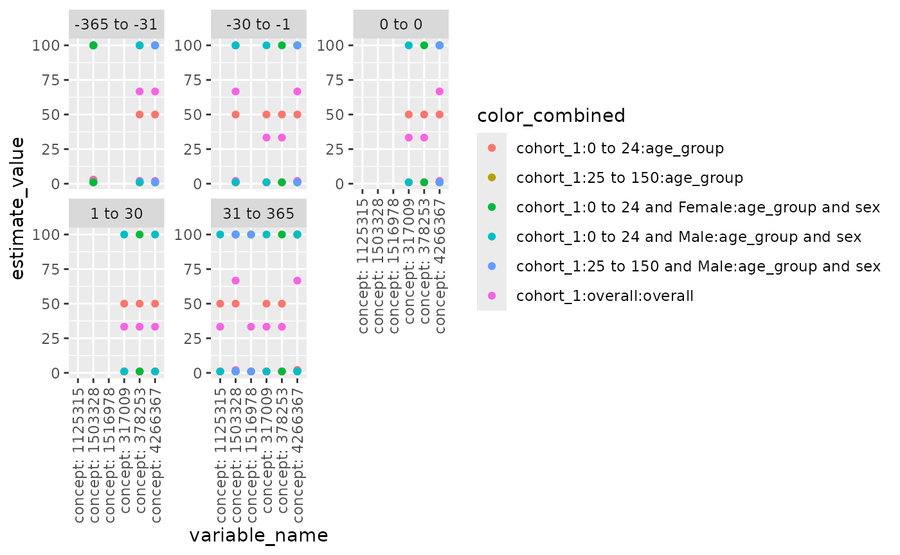
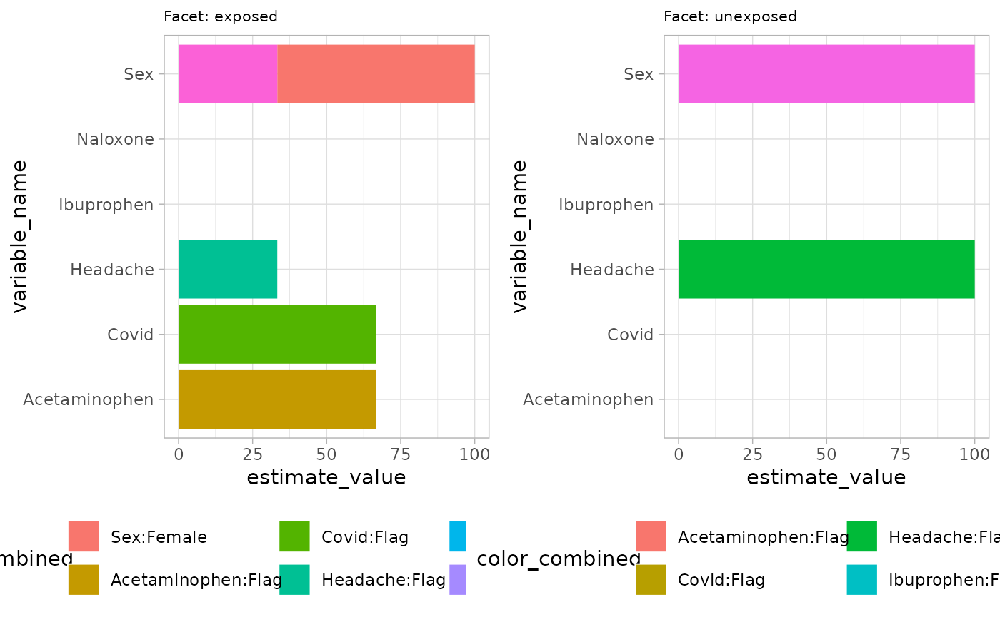
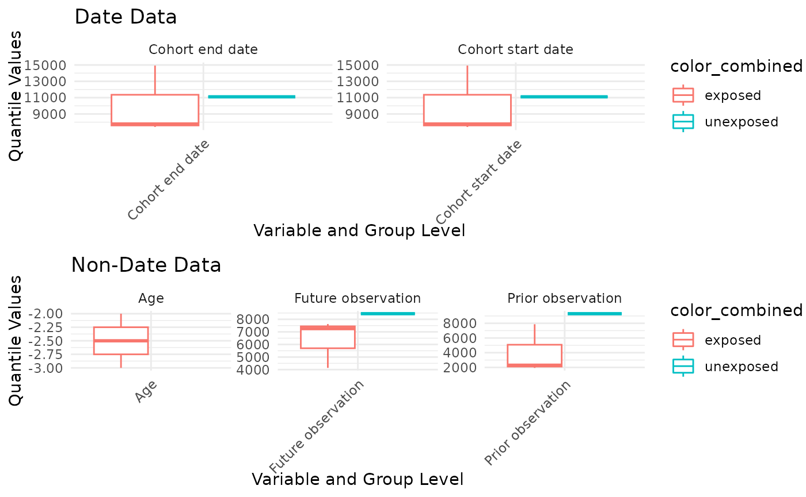

Introduction
Different plots can be generated by function in this package. Here are some examples
##Large scale characteristics plot. First we create a mock data for the plot
library(PatientProfiles)
person <- dplyr::tibble(
person_id = c(1, 2),
gender_concept_id = c(8507, 8532),
year_of_birth = c(1990, 1992),
month_of_birth = c(1, 1),
day_of_birth = c(1, 1),
race_concept_id = 0,
ethnicity_concept_id = 0
)
observation_period <- dplyr::tibble(
observation_period_id = c(1, 2),
person_id = c(1, 2),
observation_period_start_date = as.Date(c("2011-10-07", "2000-01-01")),
observation_period_end_date = as.Date(c("2031-10-07", "2030-01-01")),
period_type_concept_id = 44814724
)
cohort_interest <- dplyr::tibble(
cohort_definition_id = c(1, 1, 1, 2),
subject_id = c(1, 1, 2, 2),
cohort_start_date = as.Date(c(
"2012-10-10", "2015-01-01", "2013-10-10", "2015-01-01"
)),
cohort_end_date = as.Date(c(
"2012-10-10", "2015-01-01", "2013-10-10", "2015-01-01"
))
)
drug_exposure <- dplyr::tibble(
drug_exposure_id = 1:11,
person_id = c(rep(1, 8), rep(2, 3)),
drug_concept_id = c(
rep(1125315, 2), rep(1503328, 5), 1516978, 1125315, 1503328, 1516978
),
drug_exposure_start_date = as.Date(c(
"2010-10-01", "2012-12-31", "2010-01-01", "2012-09-01", "2013-04-01",
"2014-10-31", "2015-05-01", "2015-10-01", "2012-01-01", "2012-10-01",
"2014-10-12"
)),
drug_exposure_end_date = as.Date(c(
"2010-12-01", "2013-05-12", "2011-01-01", "2012-10-01", "2013-05-01",
"2014-12-31", "2015-05-02", "2016-10-01", "2012-01-01", "2012-10-30",
"2015-01-10"
)),
drug_type_concept_id = 38000177,
quantity = 1
)
condition_occurrence <- dplyr::tibble(
condition_occurrence_id = 1:8,
person_id = c(rep(1, 4), rep(2, 4)),
condition_concept_id = c(
317009, 378253, 378253, 4266367, 317009, 317009, 378253, 4266367
),
condition_start_date = as.Date(c(
"2012-10-01", "2012-01-01", "2014-01-01", "2010-01-01", "2015-02-01",
"2012-01-01", "2013-10-01", "2014-10-10"
)),
condition_end_date = as.Date(c(
"2013-01-01", "2012-04-01", "2014-10-12", "2015-01-01", "2015-03-01",
"2012-04-01", "2013-12-01", NA
)),
condition_type_concept_id = 32020
)
cdm <- mockPatientProfiles(
person = person, observation_period = observation_period,
cohort_interest = cohort_interest, drug_exposure = drug_exposure,
condition_occurrence = condition_occurrence
)
concept <- dplyr::tibble(
concept_id = c(1125315, 1503328, 1516978, 317009, 378253, 4266367),
domain_id = NA_character_,
vocabulary_id = NA_character_,
concept_class_id = NA_character_,
concept_code = NA_character_,
valid_start_date = as.Date("1900-01-01"),
valid_end_date = as.Date("2099-01-01")
) %>%
dplyr::mutate(concept_name = paste0("concept: ", .data$concept_id))
cdm <- CDMConnector::insertTable(cdm, "concept", concept)
largeScaleCharacteristicsResult <- cdm$cohort_interest %>%
addDemographics(
ageGroup = list(c(0, 24), c(25, 150))
) %>%
summariseLargeScaleCharacteristics(
strata = list("age_group", c("age_group", "sex")),
episodeInWindow = c("condition_occurrence", "drug_exposure"),
minimumFrequency = 0
)## Warning: ! `result_id` column is missing, please add it as it is
## a compulsory column.Use plotLargeScaleCharacteristics() to generate a
scatterplot for large scale characteristics. User can specify x-axis
(xAxis), y-axis (yAxis), variables to facet by (facetVars), variables to
color by (colorVars), the order of facets (facetOrder), and whether to
display the strings on x-axis vertically, as some concept id strings may
be too long. It’s worth noted if providing facetOrder, used need to make
sure: 1. facetVars is specified 2. all values in facetOrder are in the
unique combinations of facetVars. Below is an example.
levels_ordered <- c( "-365 to -31", "-30 to -1", "0 to 0", "1 to 30", "31 to 365")
plotLargeScaleCharacteristics(
data = largeScaleCharacteristicsResult %>% dplyr::filter(group_level == "cohort_1"),
xAxis = "variable_name",
yAxis = "estimate_value",
facetVars = c("variable_level"),
colorVars = c("group_level", "strata_level", "strata_name"),
facetOrder = levels_ordered,
vertical_x = TRUE
)
Characteristics plots
plotCharacteristics can plot the
summariseCharacteristics results, with boxplot or barplot. First we
create a mock data.
observation_period <- dplyr::tibble(
observation_period_id = c(1, 2, 3),
person_id = c(1, 2, 3),
observation_period_start_date = as.Date(c(
"1985-01-01", "1989-04-29", "1974-12-03"
)),
observation_period_end_date = as.Date(c(
"2011-03-04", "2022-03-14", "2023-07-10"
)),
period_type_concept_id = 0
)
dus_cohort <- dplyr::tibble(
cohort_definition_id = c(1, 1, 1, 2),
subject_id = c(1, 1, 2, 3),
cohort_start_date = as.Date(c(
"1990-04-19", "1991-04-19", "2010-11-14", "2000-05-25"
)),
cohort_end_date = as.Date(c(
"1990-04-19", "1991-04-19", "2010-11-14", "2000-05-25"
))
)
comorbidities <- dplyr::tibble(
cohort_definition_id = c(1, 2, 2, 1),
subject_id = c(1, 1, 3, 3),
cohort_start_date = as.Date(c(
"1990-01-01", "1990-06-01", "2000-01-01", "2000-06-01"
)),
cohort_end_date = as.Date(c(
"1990-01-01", "1990-06-01", "2000-01-01", "2000-06-01"
))
)
medication <- dplyr::tibble(
cohort_definition_id = c(1, 1, 2, 1),
subject_id = c(1, 1, 2, 3),
cohort_start_date = as.Date(c(
"1990-02-01", "1990-08-01", "2009-01-01", "1995-06-01"
)),
cohort_end_date = as.Date(c(
"1990-02-01", "1990-08-01", "2009-01-01", "1995-06-01"
))
)
emptyCohort <- dplyr::tibble(
cohort_definition_id = numeric(),
subject_id = numeric(),
cohort_start_date = as.Date(character()),
cohort_end_date = as.Date(character())
)
cdm <- mockPatientProfiles(
dus_cohort = dus_cohort, cohort1 = emptyCohort,
cohort2 = emptyCohort, observation_period = observation_period,
comorbidities = comorbidities, medication = medication
)
cdm$dus_cohort <- omopgenerics::newCohortTable(
table = cdm$dus_cohort, cohortSetRef = dplyr::tibble(
cohort_definition_id = c(1, 2), cohort_name = c("exposed", "unexposed")
)
)
cdm$comorbidities <- omopgenerics::newCohortTable(
table = cdm$comorbidities, cohortSetRef = dplyr::tibble(
cohort_definition_id = c(1, 2), cohort_name = c("covid", "headache")
)
)
cdm$medication <- omopgenerics::newCohortTable(
table = cdm$medication,
cohortSetRef = dplyr::tibble(
cohort_definition_id = c(1, 2, 3),
cohort_name = c("acetaminophen", "ibuprophen", "naloxone")
),
cohortAttritionRef = NULL
)
characteristicsResult <- summariseCharacteristics(
cdm$dus_cohort,
cohortIntersect = list(
"Medications" = list(
targetCohortTable = "medication", value = "flag", window = c(-365, 0)
), "Comorbidities" = list(
targetCohortTable = "comorbidities", value = "flag", window = c(-Inf, 0)
)
)
)## ℹ adding demographics columns## ℹ adding cohort intersect columns for table: medication## ℹ adding cohort intersect columns for table: comorbidities## ℹ summarising data## Warning: There were 2 warnings in `dplyr::summarise()`.
## The first warning was:
## ℹ In argument: `dplyr::across(...)`.
## ℹ In group 2: `strata_id = 2`.
## Caused by warning in `base::min()`:
## ! no non-missing arguments to min; returning Inf
## ℹ Run `dplyr::last_dplyr_warnings()` to see the 1 remaining warning.## ✔ summariseCharacteristics finished!Now we show barplot example by setting plotStyle = “barplot” in
plotCharacteristics. Similar to previous function, user can
define axes, facetVars and colorVars. Currently, barplot is only
plotting percentage.
plotCharacteristics(
data = characteristicsResult,
xAxis = "estimate_value",
yAxis = "variable_name",
plotStyle = "barplot",
facetVars = c("group_level"),
colorVars = c("variable_name", "variable_level")
)
User can plot boxplot based on q25 q75 median min max in data, using
plotCharacteristics and set plotStyle = “boxplot”.
plotCharacteristics(
data = characteristicsResult,
xAxis = "estimate_value",
yAxis = "variable_name",
plotStyle = "boxplot",
facetVars = "variable_name",
colorVars = c("group_level")
)## Warning: Removed 2 rows containing missing values or values outside the scale range
## (`geom_segment()`).## Warning: Removed 1 row containing missing values or values outside the scale range
## (`geom_segment()`).